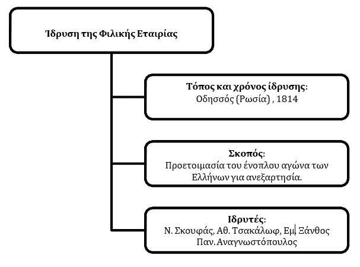

6. Η Φιλική Εταιρεία και η κήρυξη της ελληνικής επανάστασης στις παραδουνάβιες ηγεμονίες
Λέξεις-κλειδιά της ενότητας:
- Φιλική Εταιρεία
- Αόρατη Αρχή
- Καρμπονάροι
- Ιωάννης Καποδίστριας
- Αλέξανδρος Υψηλάντης
- Παραδουνάβιες Ηγεμονίες
- Ιάσιο
- Δραγατσάνι
- Ιερός Λόχος
- Γρηγόριος Ε΄
- Γιωργάκης Ολύμπιος
- Ιωάννης Φαρμάκης
Η ίδρυση και η ανάπτυξη της Φιλικής Εταιρείας
Η Φιλική Εταιρεία ήταν μια μυστική οργάνωση που δημιουργήθηκε το 1814 στην Οδησσό της Ρωσίας με σκοπό την προετοιμασία του ένοπλου αγώνα των Ελλήνων για ανεξαρτησία. Άλλες οργανώσεις, που είχαν προηγηθεί, δεν έθεταν ως πρώτο στόχο την επανάσταση, αλλά την απόκτηση παιδείας. Πρωτεργάτες της Φιλικής Εταιρείας υπήρξαν οι Νικόλαος Σκουφάς, Αθανάσιος Τσακάλωφ, Εμμανουήλ Ξάνθος και Παναγιώτης Αναγνωστόπουλος.
Προκειμένου να επιτύχουν τους στόχους τους, οι Φιλικοί θα έπρεπε να κάνουν τεράστιες οργανωτικές προσπάθειες, καθώς ο ελληνισμός ήταν διάσπαρτος σ' έναν ευρύ γεωγραφικό χώρο, και να δράσουν με μεγάλη μυστικότητα, ώστε να μη γίνουν αντιληπτοί από την οθωμανική διοίκηση αλλά και από τις ευρωπαϊκές απολυταρχίες. Ακόμη, θα έπρεπε να υπερνικήσουν τους δισταγμούς εκείνων των Ελλήνων που είχαν δει προγενέστερα επαναστατικά κινήματα να αποτυγχάνουν και να κινητοποιήσουν ανθρώπους προερχόμενους από διαφορετικές κοινωνικές ομάδες, με διαφορετικά οικονομικά-κοινωνικά συμφέροντα και επιδιώξεις.
Από την άλλη πλευρά, πάντως, το έργο των Φιλικών ευνοούνταν από το ότι η Οθωμανική αυτοκρατορία αντιμετώπιζε σοβαρά εσωτερικά προβλήματα, από τη διάδοση μεταξύ των Ελλήνων των ιδεών της γαλλικής επανάστασης και από το γεγονός ότι για σημαντικό τμήμα του ελληνισμού ήταν, πλέον, ώριμο αίτημα η δημιουργία ανεξάρτητου ελληνικού κράτους. Η Φιλική Εταιρεία υιοθέτησε το οργανωτικό πρότυπο μυστικών εταιρειών, όπως οι καρμπονάροι, που δρούσαν τότε στην Ευρώπη. Τα υποψήφια μέλη δοκιμάζονταν για ένα διάστημα και στη συνέχεια εντάσσονταν στην οργάνωση, αφού ορκίζονταν πίστη και αφοσίωση σε αυτή. Για τους παραβάτες η προβλεπόμενη τιμωρία ήταν ο θάνατος. Οι Φιλικοί χρησιμοποιούσαν ψευδώνυμα και επικοινωνούσαν με κρυπτογραφικό αλφάβητο.
1. Ο όρκος των Φιλικών (αποσπάσματα)
Ορκίζομαι ενώπιον του αληθινού Θεού οικειοθελώς, ότι θέλω είμαι επί ζωής μου πιστός εις την Εταιρείαν κατά πάντα. Να μη φανερώσω το παραμικρόν από τα σημεία και λόγους της, μήτε να σταθώ κατ' ουδένα λόγον η αφορμή τού να καταλάβωσιν άλλοι ποτέ ότι γνωρίζω τι περί τούτων, μήτε εις συγγενείς μου, μήτε εις πνευματικόν, μήτε εις φίλον μου. [...] Τέλος πάντων ορκίζομαι εις σε, ω Ιερά Πατρίς και εις την μέλλουσαν ελευθερίαν των ομογενών μου, ότι αφιερώνομαι όλος εις σε. Εις το εξής συ θέλεις είσαι η αιτία και ο σκοπός των διαλογισμών μου. Το όνομά σου ο οδηγός των πράξεών μου, και η ευτυχία σου η ανταμοιβή των κόπων μου.
Φιλήμων, Δοκίμιον ιστορικόν περί της Φιλικής Εταιρείας (1834), Γκράφια, Αθήνα 1971, σ. 17.
Ανάλυση Πηγής
Αξίζει ιδιαίτερα να επισημανθούν η μεγάλη σημασία που δίνεται στη διαφύλαξη του μυστικού χαρακτήρα της οργάνωσης, καθώς και στην τεράστια προσωπική ευθύνη που αναλαμβάνει αυτός που γίνεται μέλος της Φιλικής Εταιρείας.
Μέχρι τα 1817-1818, η Φιλική Εταιρεία απευθυνόταν, κυρίως, σε πλούσιους Έλληνες εμπόρους, προκειμένου να εξασφαλιστούν τα οικονομικά μέσα για την ανάπτυξή της. Ωστόσο, οι περισσότεροι από αυτούς ήταν αρνητικοί. Κατόπιν, όταν η Φιλική Εταιρεία άρχισε να απευθύνεται σε όλες τις κοινωνικές ομάδες του ελληνισμού, ιδίως σε μικρεμπόρους και διανοούμενους, αναπτύχθηκε γρήγορα. Γυναίκες γίνονταν δεκτές μόνο κατ' εξαίρεση. Η ηγεσία της Φιλικής Εταιρείας, η Αόρατη Αρχή, παρέμενε μυστική και αφηνόταν, σκόπιμα, να εννοηθεί ότι αποτελούνταν από ισχυρά πρόσωπα.
Καθώς ο καιρός περνούσε, οι ιδρυτές της Φιλικής Εταιρείας, καταλαβαίνοντας ότι τα άσημα ονόματά τους δύσκολα θα ενέπνεαν τους συμπατριώτες τους, αποφάσισαν να αναθέσουν την ηγεσία σε έναν γνωστό Έλληνα. Αρχικά, απευθύνθηκαν στον Ιωάννη Καποδίστρια, τότε υπουργό Εξωτερικών της Ρωσίας, αλλά εκείνος αρνήθηκε θεωρώντας ότι οι συνθήκες δεν ήταν ακόμη ώριμες για επανάσταση. Τελικά, η ηγεσία ανατέθηκε στον Αλέξανδρο Υψηλάντη, ανώτερο αξιωματικό του ρωσικού στρατού, που τότε ανακηρύχθηκε Γενικός Επίτροπος της Αρχής.
Ο ρόλος της Φιλικής Εταιρείας στην προετοιμασία της ελληνικής επανάστασης
Η ίδρυση της Φιλικής Εταιρείας αποτελεί τη σπουδαιότερη πολιτική ενέργεια του υπόδουλου ελληνισμού, όπως και η οργάνωση της Ελληνικής Επανάστασης το κορύφωμα μιας μακράς σειράς πράξεων ανυπακοής και ανταρσίας προς την οθωμανική κυριαρχία. Η θετική αποτίμηση του έργου της Φιλικής Εταιρείας δεν οφείλεται μόνο στο γεγονός ότι δι' αυτής οργανώθηκε επιτυχώς η αντιοθωμανική εθνική επανάσταση των Ελλήνων αλλά κυρίως γιατί, μέσα σε ένα πνεύμα νεωτερικότητας, τέθηκε το ζήτημα της εθνικής αποκατάστασης με νέους όρους. Θεωρήθηκε δηλαδή η εθνική αποκατάσταση των Ελλήνων ζήτημα ελληνικού ενδιαφέροντος και ελληνικής ευθύνης και όχι, όπως συνέβαινε παλαιότερα, ένα ζήτημα που θα λυνόταν στο πλαίσιο μιας απελευθερωτικής-επεκτατικής δραστηριότητας κάποιας μεγάλης ευρωπαϊκής δύναμης. Με βάση τα νεωτερικά προτάγματα του πολιτικοποιημένου Διαφωτισμού και του πρώιμου ρομαντισμού, προτείνει την αυτοτελή και αυτοδύναμη οργάνωση του έθνους, το οποίο θα προβεί, με τη σειρά του, κυριαρχικά και μέσα από την εκτίμηση των δικών του αναγκών, στην επίτευξη των προσφορότερων συμμαχιών.
Β. Παναγιωτόπουλος, «Η Φιλική Εταιρεία, οργανωτικές προϋποθέσεις της εθνικής επανάστασης», Ιστορία του νέου ελληνισμού, Ελληνικά Γράμματα, Αθήνα 2003, τόμ. 3, σ. 9.
Ανάλυση Πηγής
Ο ιστορικός αξιολογεί την ίδρυση της Φιλικής Εταιρείας ως τη «σπουδαιότερη πολιτική ενέργεια του υπόδουλου ελληνισμού» επειδή, πέρα από την επιτυχή οργάνωση της επανάστασης, έθεσε το ζήτημα της εθνικής αποκατάστασης με νέους όρους. Θεώρησε την εθνική αποκατάσταση ως ζήτημα ελληνικού ενδιαφέροντος και ευθύνης, και όχι ως κάτι που θα λυνόταν από κάποια μεγάλη ευρωπαϊκή δύναμη. Έφερε μια νέα αντίληψη για την αυτοτελή και αυτοδύναμη οργάνωση του έθνους, βασισμένη στις αρχές του πολιτικοποιημένου Διαφωτισμού και του πρώιμου ρομαντισμού.
Η κήρυξη της ελληνικής επανάστασης στις Ηγεμονίες
Η επανάσταση αποφασίστηκε να ξεκινήσει από τις παραδουνάβιες ηγεμονίες (σημερινή Ρουμανία), γιατί εκεί δεν υπήρχε τουρκικός στρατός (σύμφωνα με παλαιότερες ρωσοτουρκικές συνθήκες), αλλά και γιατί λίγο βορειότερα βρισκόταν ρωσικός στρατός, που υπήρχε ελπίδα ότι θα βοηθούσε. Παράλληλα, προσεγγίστηκαν διάφοροι βαλκάνιοι ηγέτες για να εξασφαλιστεί η συμμετοχή τους στην επανάσταση. Ο Σέρβος ηγέτης Καραγεώργεβιτς έγινε μέλος της Φιλικής Εταιρείας· οι οθωμανικές αρχές, ωστόσο, τον συνέλαβαν και τον εκτέλεσαν. Ο Βλαντιμηρέσκου, τοπικός ηγέτης στις Ηγεμονίες, συμμετείπε, αλλά μόνο στην αρχή.
Ο Αλέξανδρος Υψηλάντης, ξεκινώντας από ρωσικό έδαφος, πέρασε τον ποταμό Προύθο, μπήκε στις Ηγεμονίες και στις 24 Φεβρουαρίου 1821 κήρυξε την επανάσταση στο Ιάσιο της Βλαχίας (σημερινή Ρουμανία). Κυκλοφόρησε προκηρύξεις με τις οποίες κήρυττε την επανάσταση, αφήνοντας να εννοηθεί ότι πίσω απ' αυτή βρισκόταν η Ρωσία. Παράλληλα, συγκροτούσε το στράτευμά του.
2. Μία από τις επαναστατικές προκηρύξεις του Αλέξανδρου Υψηλάντη (αποσπάσματα)
ΜΑΧΟΥ ΥΠΕΡ ΠΙΣΤΕΩΣ ΚΑΙ ΠΑΤΡΙΔΟΣ Η ώρα ήλθεν, ω Άνδρες Έλληνες! Προ πολλού οι λαοί της Ευρώπης, πολεμούντες υπέρ των ιδίων Δικαιωμάτων και ελευθερίας αυτών, μας επροσκάλουν εις μίμησιν [-] Οι φωτισμένοι λαοί της Ευρώπης [...] πλήρεις ευγνωμοσύνης διά τας προς αυτούς των Προπατόρων μας ευεργεσίας, επιθυμούσι την ελευθερίαν της Ελλάδος. Ημείς φαινόμενοι άξιοι της προπατορικής αρετής και του παρόντος αιώνος, είμεθα Εύελπεις, να επιτύχωμεν την υπεράσπισιν αυτών και βοήθειαν πολλοί εκ τούτων φιλελεύθεροι θέλουσιν έλθη, διά να συναγωνισθώσι με ημάς. Κινηθήτε, ω φίλοι, και θέλετε ιδή μίαν Κραταιάν δύναμιν να υπερασπισθή τα δίκαιά μας! [...] Ας καλέσωμεν λοιπόν εκ νέου, ω Ανδρείοι και μεγαλόψυχοι Έλληνες, την ελευθερίαν εις την κλασσικήν γην της Ελλάδος! Εις τα όπλα λοιπόν φίλοι, η Πατρίς μάς προσκαλεί! Αλέξανδρος Υψηλάντης Την 24ην Φεβρουαρίου 1821. Εις το γενικόν στρατόπεδον του Ιασίου.
Πηγή: Δ. Κόκκινος, Η Ελληνική Επανάστασις, Μέλισσα, Αθήνα 1956-1960, τόμ. 1, σ. 103-106.
Ανάλυση Πηγής
Ο συντάκτης της επαναστατικής προκήρυξης καλεί τους Έλληνες να αγωνιστούν για την πίστη τους και την πατρίδα. Κάνοντας σαφή αναφορά στη γαλλική επανάσταση και ενδεχομένως στις επαναστάσεις των ετών 1820-1821, ζητά από τους Έλληνες να ακολουθήσουν αυτά τα παραδείγματα. Άλλωστε, οι Ευρωπαίοι επιθυμούν την ελευθερία των Ελλήνων και πολλοί είναι πρόθυμοι να έρθουν και να πολεμήσουν γι' αυτή. Έτσι, οι Έλληνες πρέπει να φανούν αντάξιοι των προγόνων τους (αναφορά στο κλασικό αρχαιοελληνικό παρελθόν) και να επαναστατήσουν με σκοπό την κατάκτηση της ελευθερίας τους. Μάλιστα, υπάρχει μια «Κραταιά δύναμις» (σαφής υπαινιγμός για τη Ρωσία) που θα βοηθήσει τους Έλληνες.
Γρήγορα, όμως, προέκυψαν σοβαρά προβλήματα. Οι πλούσιοι Έλληνες των Ηγεμονιών δεν ανταποκρίθηκαν υλικά και η στρατολόγηση δεν προχωρούσε. Ο τσάρος αποκήρυξε την επανάσταση και επέτρεψε την είσοδο τουρκικού στρατού στις Ηγεμονίες για την καταστολή της. Ο πατριάρχης Γρηγόριος Ε΄ πιεζόμενος από τον σουλτάνο αφόρισε όσους συμμετείχαν στο κίνημα. Επιπλέον, ο Βλαντιμηρέσκου θεωρήθηκε προδότης και με εντολή της Φιλικής Εταιρείας εκτελέστηκε.
Παρά τις δυσκολίες, ο Υψηλάντης συνέχισε τον αγώνα. Η κρίσιμη μάχη δόθηκε στο Δραγατσάνι (7 Ιουνίου 1821), όπου και διακρίθηκε ιδιαίτερα, ο Ιερός Λόχος, μια μονάδα που είχε συγκροτηθεί από εθελοντές σπουδαστές. Η ήττα, ωστόσο, δεν αποφεύχθηκε. Ο Υψηλάντης πέρασε στην Αυστρία όπου οι αρχές τον συνέλαβαν. Ο τραγικός επίλογος γράφτηκε λίγους μήνες αργότερα, όταν ένα τελευταίο απομονωμένο τμήμα αγωνιστών με επικεφαλής τους οπλαρχηγούς Γιωργάκη Ολύμπιο και Ιωάννη Φαρμάκη εγκλωβίστηκε στη μονή Σέκκου. Τότε, ο Ολύμπιος αποφάσισε να ανατιναχθεί μαζί με τους συμπολεμιστές του, ενώ ο Φαρμάκης, μετά από σκληρή αντίσταση δύο εβδομάδων, πιάστηκε αιχμάλωτος και αποκεφαλίστηκε.
Δοκίμασε τις γνώσεις σου!
Κουίζ Πολλαπλών Επιλογών
1. Πού ιδρύθηκε η Φιλική Εταιρεία;
2. Ποιος από τους παρακάτω δεν ήταν ιδρυτικό μέλος της Φιλικής Εταιρείας;
3. Ποιος ανακηρύχθηκε Γενικός Επίτροπος της Αρχής της Φιλικής Εταιρείας;
4. Ποια ήταν μία από τις αιτίες που επιλέχθηκαν οι Παραδουνάβιες Ηγεμονίες για την έναρξη της επανάστασης;
5. Ποια μονάδα διακρίθηκε στη μάχη του Δραγατσανίου;
Άσκηση Σωστού/Λάθους
1. Η Φιλική Εταιρεία απευθυνόταν αρχικά σε όλες τις κοινωνικές ομάδες του ελληνισμού.
2. Ο Ιωάννης Καποδίστριας αποδέχθηκε αμέσως την ηγεσία της Φιλικής Εταιρείας.
3. Η επανάσταση στις Ηγεμονίες αποκήρυξε από τον τσάρο της Ρωσίας.
4. Ο πατριάρχης Γρηγόριος Ε΄ αφόρισε όσους συμμετείχαν στο κίνημα του Υψηλάντη.
5. Ο Αλέξανδρος Υψηλάντης πέθανε στη μάχη του Δραγατσανίου.
Περίληψη Ενότητας
ΚΕΦΑΛΑΙΟ ΔΕΥΤΕΡΟ: Η ΕΛΛΗΝΙΚΗ ΕΠΑΝΑΣΤΑΣΗ (1821-1830)
6. Η Φιλική Εταιρεία και η κήρυξη της ελληνικής επανάστασης στις παραδουνάβιες ηγεμονίες
Ίδρυση της Φιλικής Εταιρείας: Ιδρύθηκε το 1814 στην Οδησσό της Ρωσίας με σκοπό την προετοιμασία του ένοπλου αγώνα των Ελλήνων για ανεξαρτησία. Ιδρυτές ήταν οι Νικόλαος Σκουφάς, Αθανάσιος Τσακάλωφ, Εμμανουήλ Ξάνθος, Παναγιώτης Αναγνωστόπουλος.
Δυσκολίες Οργάνωσης: Ο ελληνισμός ήταν διάσπαρτος, απαιτούνταν απόλυτη μυστικότητα, έπρεπε να υπερνικηθούν οι δισταγμοί των επιφυλακτικών Ελλήνων και να κινητοποιηθούν διαφορετικές κοινωνικές ομάδες. Ευνοϊκοί παράγοντες ήταν τα εσωτερικά προβλήματα της Οθωμανικής Αυτοκρατορίας, η διάδοση των ιδεών της Γαλλικής Επανάστασης και η ωρίμανση του αιτήματος για ανεξάρτητο ελληνικό κράτος.
Ηγεσία της Φιλικής Εταιρείας: Αρχικά προτάθηκε στον Ιωάννη Καποδίστρια, ο οποίος αρνήθηκε. Τελικά, η ηγεσία ανατέθηκε στον Αλέξανδρο Υψηλάντη, ο οποίος ανακηρύχθηκε Γενικός Επίτροπος της Αρχής.
Η κήρυξη της Ελληνικής Επανάστασης στις Παραδουνάβιες Ηγεμονίες: Η επανάσταση ξεκίνησε στις 24 Φεβρουαρίου 1821 στο Ιάσιο της Βλαχίας. Επιλέχθηκε αυτή η περιοχή επειδή δεν υπήρχε τουρκικός στρατός και υπήρχε ελπίδα για ρωσική βοήθεια. Προέκυψαν, ωστόσο, σοβαρά προβλήματα: οι πλούσιοι Έλληνες δεν ανταποκρίθηκαν οικονομικά, ο τσάρος αποκήρυξε τον Υψηλάντη, ο Πατριάρχης Γρηγόριος Ε΄ αφόρισε τους επαναστάτες και ο Βλαντιμιρέσκου εκτελέστηκε ως προδότης.
Έκβαση του Αγώνα: Η κρίσιμη μάχη δόθηκε στο Δραγατσάνι (7 Ιουνίου 1821), όπου διακρίθηκε ο Ιερός Λόχος. Παρά την ήττα, ο Υψηλάντης συνέχισε τον αγώνα, αλλά συνελήφθη στην Αυστρία. Ένα τελευταίο τμήμα αγωνιστών, με επικεφαλής τους Γιωργάκη Ολύμπιο και Ιωάννη Φαρμάκη, εγκλωβίστηκε στη Μονή Σέκκου, με τον Ολύμπιο να ανατινάζεται και τον Φαρμάκη να αποκεφαλίζεται.